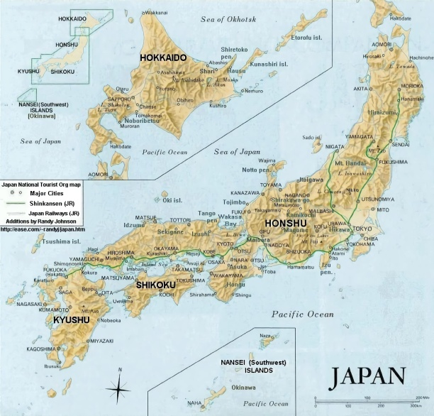
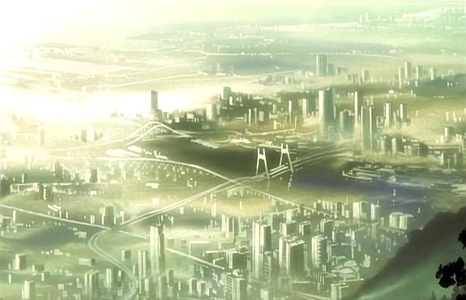
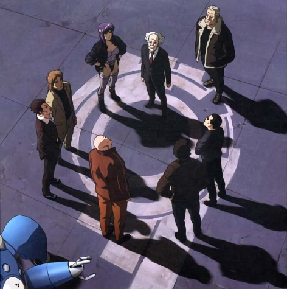
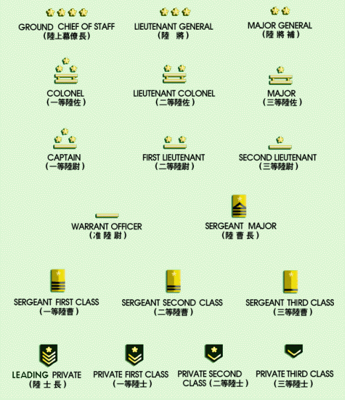
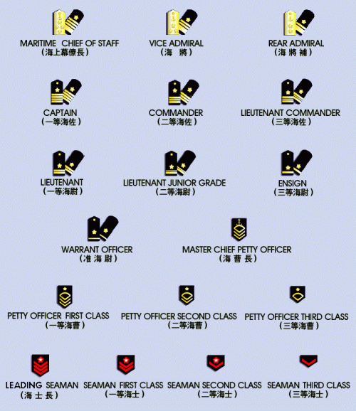
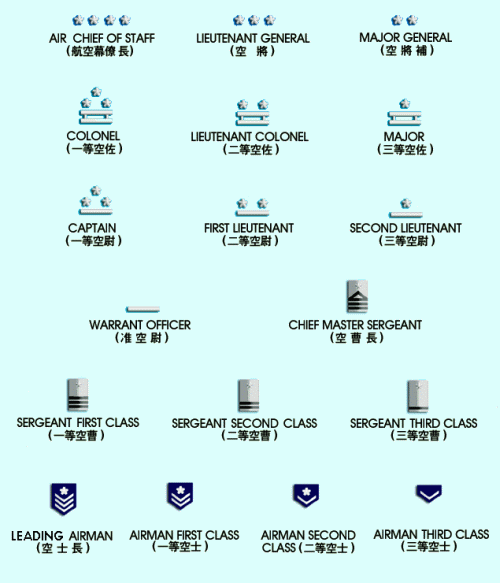

Capital : New Tokyo
Population : 142.449.703
Taux d'alphabétisation : 99.9%
Monnaie : Yen (¥)
Climat : variable depuis tropical dans le sud à tempéré avec hivers doux dans le nord.
Eaux territoriales : 12 miles nautiques; 3 miles nautiques dans les détroits internationaux - La Pérouse ou Soya, Tsugaru, Osumi, et le Détroit de Corée ou Détroit de Tsushima.
Forces armées : Force terrestre d'auto-défense (Armée), Force maritime d'auto-défense (Marine) et Force aérienne d'auto-défense (Armée de l'Air).
Les montagnes dominent le Japon, en occupant 75 à 80% de la surface du pays.
Le Japon est une puissance économique majeure et les revenus moyens ainsi que le niveau de vie sont parmis les plus élevés au monde. Le succès de l'économie japonaise repose sur l'exportation de biens de consommation de haute qualité utilisant les dernières technologies.

La coopération gouvernement-industrie, une valeur travail au coeur des valeurs individuelles, la maîtrise des technologies les plus avancées et un budget de la défense relativement faible (environ 1% du PIB) ont aidé le Japon à s'élever très rapidement au rang de l'économie la plus puissante au monde.
Une des caractéristiques majeures de cette économie est que les fabricants, fournisseurs et distributeurs travaillent ensemble de façon étroite au sein d'entités appelées keiretsu.
L'industrie, le secteur le plus important de l'économie, est dépendante des importations de matières premières et d'énergie.
Le secteur agricole, de taille beaucoup plus réduite et massivement subventionné et protégé, parvient à avoir des rendements à l'hectare parmi les plus élevés au monde. Habituellement auto suffisant pour le riz, le Japon doit importer 70% de ses besoins en céréales et en plantes fourragères.
Le Japon arme une des plus importantes flottes de pèche au monde et réalise presque 25% des prises mondiales.
La surpopulation des zones habitables est un des problèmes majeurs du Japon depuis longtemps.

Le système gouvernemental au Japon en 2029 est largement influencé par le système parlementaire anglais. Il est divisé en trois pouvoirs : une Diète à deux chambres (pouvoir législatif), le pouvoir judiciaire et le pouvoir administratif.
Les citoyens élisent les membres de la Diète qui à leur tour élisent un Premier Ministre. Après quoi, celui ci nomme les Ministres.
Ministère de l'Agriculture, des Forêts et de la Pêche : ce Ministère est responsable de l'ensemble des questions relatives aux produits agro-alimentaires et forestiers, depuis la production jusqu'à la consommation mais aussi du développement des zones rurales et du bien-être des habitants des campagnes.
Ministère de l'Education : le MED est en charge du système scolaire, des écoles et du payement des professeurs. Il a aussi la responsabilité des installations spécialisées, comme par exemple celles s'occupant des cas de syndrome du cyber-cerveau (Cyberbrain Closed Shell Syndrome).
Ministère de l'Environnement : le MEN contrôle la qualité de l'air et vérifie que les corporations respectent bien les lois sur les déchets. Le MEN emploie de nombreuses sortes de micromachines, qui lui sont vendues par divers sociétés, afin d'accomplir différentes tâches. Certaines d'entre elles peuvent par exemple dévorer la pollution. Le ministère informe le public de leur utilisation et les pilote lors des opérations de dispersion et de nettoyage. Il a également été responsable du Miracle Japonais, qui a enlevé toutes traces de radiations des ruines de Tokyo.
Ministère des Finances : le Ministère des Finances essaye de maintenir la stabilité et le dynamisme de l'économie mais aussi la paix et la prospérité de la société en gérant les finances nationales de la façon la plus efficace et la plus transparente possible dans l'intérêt de l'ensemble des contribuables japonais. Il a aussi pour mission de promouvoir un développement durable de l'économie mondiale.
Il a la main haute sur le budget de la plupart des autres organisations, y compris des autres ministères. La limite chaque année est la fin du mois d'août. Après avoir rassemblé dans un rapport l'ensemble des budgets prévisionnels, le Ministère des Finances présente la version finale au Cabinet et celui-ci le défend à son tour devant la Diète.
Le budget de la Section 9 dépend d'une "caisse noire" secrète.
Ministère des Affaires Etrangères : aussi connu comme le MAE, ce ministère est chargé de tout ce qui est lié à la diplomatie internationale. Il s'occupe de tout le travail des Affaires Etrangères : commerce, politique, aides économiques et traités internationaux. La Section de Sécurité Publique 6 travaille pour ce Ministère et se heurte fréquemment à la Section 9 (voir plus bas sous le chapitre Affaires Internes).
Son organisation et ses fonctions sont décrites ci-dessous :
-Le Secrétariat du Ministère : ce secrétariat est chargé de coordonner et de gérer tous les départements du Ministère.
- Le Département de la Diplomatie Publique : ce département s'occupe de la signature et de la mise en oeuvre des accords internationaux destinés à promouvoir les échanges culturels, la coopération avec les organisations culturelles internationales ainsi que le rayonnement de la culture japonaise à l'étranger.
-Le Département des Problèmes Mondiaux : ce département se concentre exclusivement sur les affaires politiques liées aux problèmes mondiaux, aux contacts avec les Nations Unies et aussi sur tout ce qui est lié aux problématiques des Droits de l'Homme et des populations déplacées.
-Le Bureau de la Politique Etrangère: ce bureau définit la politique étrangère aussi bien à court qu'à long terme.
-Le Département du Désarmement, de la Non Prolifération et des Sciences : ce département a la responsabilité de tout ce qui se rapporte au contrôle des armes, au désarmement, à la non-prolifération, à l'énergie nucléaire et aux affaires scientifiques (notamment la coopération internationale).
-Bureau des Affaires de la zone Asie-Océanie : ce bureau dirige tout le travail de prospective permettant la définition des politiques pour les pays de la zone Asie-Océanie.
-Bureau des Affaires d'Amérique du Nord : ce bureau dirige tout le travail de prospective permettant la définition des politiques pour les pays du continent nord américain.
-Bureau des Affaires européennes : ce bureau dirige tout le travail de prospective permettant la définition des politiques pour les pays européens.
-Bureau des Affaires africaines et moyen-orientales : ce bureau dirige tout le travail de prospective permettant la définition des politiques pour les pays africains et moyen-orientaux.
-Bureau des Affaires Economiques : ce bureau s'occupe de la protection et de la promotion des intérêts japonais pour tout ce qui concerne le commerce international et la navigation.
-Bureau de la Coopération : ce bureau à la charge de tout ce qui est lié aux accords et traités internationaux dans le domaine de la coopération économique.
-Bureau des Questions Juridiques Internationales : ce bureau s'occupe aussi bien de la négociation de tous les traités et autres accords internationaux que des problèmes de loi internationale ou autres activités judiciaires liées aux affaires diplomatiques.
-Bureau des Affaires Consulaires : ce bureau est chargé de la protection des Japonais et de leurs biens à l'étranger (sauf quand cela tombe sous la juridiction d'un autre bureau), de délivrer les passeports et autres documents nécessaires pour voyager à l'extérieur du pays ainsi que des affaires d'émigration.
-Service de Renseignements et d'Analyse : ce service est chargé de gérer la partie renseignements, aussi bien de la collecte de renseignements sur la situation internationale que d'enquêtes plus approfondies sur certains pays (sauf quand cela tombe sous la juridiction d'un autre bureau) et de l'analyse de la situation internationale.
Ministère de l'Aide Internationale : à ne pas confondre avec le MAE, le Ministère de l'Aide Internationale est souvent appelé l'"Assistant Officiel au Développement" ou AOD.
Cette agence est celle avec laquelle le gouvernement a le plus de problèmes car la doctrine actuelle des autres ministères est de s'occuper des problèmes intérieurs en tout premier lieu. Ce qui gène le plus les autres ministères, et plus spécifiquement le Ministère des Finances, est qu'ils estiment que les fonds utilisés par l'AOD pour aider d'autres pays sont mal utilisés par ceux-ci, le plus souvent sans que ni l'AOD ni le pays aidé n'en soient conscients. Un exemple parfait de ce genre de comportement est les actions récentes en faveur de la République de Gavel.
Ministère de la Santé et de l'Aide Sociale : ce ministère réglemente les médicaments et tout ce qui concerne leur importation/exportation au Japon. Il délivre une autorisation pour tous les médicaments destinés à être vendus au Japon et fixe leur prix. Il coordonne aussi l'obtention des brevets par les compagnies médicales. Le ministère contrôle la manière dont ces entreprises vendent leurs produits et comment ils peuvent être commercialisés au Japon, ou non.
Ses services incluent : le Département Statistiques et Information, le Bureau de la Politique de Santé, le Bureau des Services de Santé, le Département des Hôpitaux Nationaux, le Bureau de la Sécurité Alimentaire et Pharmaceutique, le Bureau des Normes du Travail, le Département de la Sécurité et de la Santé des Entreprises Industrielles, le Département des Fonds de Compensation pour les Travailleurs, le Département pour la Qualité de Vie des Travailleurs, le Bureau de la Sécurité de l'Emploi, le Département des Mesures pour l'Emploi des Personnes Agées et Handicapées, le Bureau du Développement des Ressources Humaines, le Bureau de l'Egalité des Chances en matière d'emploi et des Affaires familiales, le Bureau de l'Aide Sociale, le Bureau d'Aide aux Victimes de Guerre, le Département de la Santé et des Affaires Sociales pour les Personnes Handicapées, le Département de la Santé et des Affaires Sociales pour les Personnes Agées, le Bureau de l'Assurance Santé, le Bureau des Retraites, le Directoire Général pour la Planification et l'Evaluation des Politiques de Santé, l'Agence de Sécurité Sociale, la Commission Centrale des Relations Industrielles et le Bureau aux Etablissements affiliés ou régionaux.
Le Ministère a récemment été soumis a une forte controverse quand il a été révélé qu'il avait intentionnellement freiné le vaccin Murai en faveur des traitements par micromachines moins efficaces. Le ministre de l'époque a utilisé le vaccin Murai comme un moyen de pression sur les compagnies produisant des micromachines, lui permettant d'acquérir une grande quantité d'argent. Ce fut à la fois l'une des causes et l'un des effets de l'affaire du Laughing Man.
Ministère de l'Intérieur : tout ce qui relève des travaux publics et de la police dépend du MIT. Il était initialement chargé des construire les systèmes de base du Japon. Ces systèmes incluent les administrations nationales; le service du personnel de la fonction publique; les services locaux des impôts et de la finance; le système électoral; les services de lutte contre les incendies, ceux de prévention des catastrophes naturelles, d'information et de communication; les services postaux et les systèmes statistiques. Le MIT a pour vocation de construire une société plus sûre et plus pratique pour l'ensemble des citoyens tout en atteignant un objectif de bonne administration.
Le Ministère a la haute main sur la Section de Sécurité Publique 9, une unité qui officiellement n'existe pas. Il est dirigé par un Ministre avec un Premier Secrétaire d'Etat comme second. Les autres fonctions importantes sont le Secrétaire du Parlement pour les Affaires Intérieures, le Secrétaire d'Etat et le Secrétaire d'Etat pour la Coordination des Politiques ainsi que le Secrétaire du Ministre.
Ministère de la Justice : il s'occupe de tout ce qui est lié aux affaires judiciaires, y compris les tribunaux (qui n'utilisent plus le système de jury). Le Ministère de la Justice a la charge du vaste domaine des affaires juridiques, qui comprend les affaires civiles, pénales, d'immigration et les autres questions. En particulier, il s'occupe des problématiques de nationalité, d'état civil et d'enregistrement des biens immobiliers, des poursuites pénales, des punitions et de la réinsertion des délinquants, des litiges au niveau étatique, du contrôle de l'immigration et de l'enregistrement des résidents étrangers et de la protection des droits des citoyens en général.
Ainsi, le Ministère de la Justice est responsable au premier chef du bon respect des lois d'un pays comme le Japon où l'état de droit est assuré.
Ministère de l'Aménagement du Territoire et des Transports : le MTT exploite un vaste réseau autoroutier et ferré presque autant surveillé que celui de la Défense Nationale. En plus de la simple construction des routes, le MTT est chargé de définir la réglementation. Il emploie tous les ouvriers en charge de l'entretien des routes mais il doit aussi réglementer le trafic en lui-même. Tous les lampadaires et les feux sont contrôlés via les ordinateurs de plates-formes qui sont toutes reliées entre elles. L'ensemble du réseau ferroviaire est également sous son contrôle.
Le MTT a aussi la main mise sur l'énorme réseau de caméras présentes sur toutes les routes. Ce système s'avère très pratique pour localiser les accidents et pour aider les différents forces de police et assimilées.
Ministère de la Défense Nationale : le MDN est responsable de tous les sujets relevant de la défense et impliquant les Forces d'Autodéfense. Celles-ci sont décrites plus bas.
Ministère des Télécommunications : le Ministère des Télécommunications surveille et contrôle les flux d'informations au Japon. Il entretient le réseau public et est chargé de faire respecter les lois le régissant.
Son domaine d'intervention a été étendu dans les dernières décennies à tous les communications via cyber-cerveau. Il doit souvent faire appel aux agences de sécurité publique pour lutter contre l'augmentation de la cybercriminalité. Tout ce qui peut perturber le réseau de communications relève de sa juridiction.
Le Bureau de la Sécurité Publique est une force de police nationale utilisée par les ministères. Par sa nature, cette force est quasiment militaire et elle est parfois utilisée pour des opérations spéciales ou d'espionnage.
Il est composé de 9 sections différentes, qui toutes répondent directement à un ministère ou à un autre.
Section 1 : Section des Services Spéciaux des Enquêtes du Quartier Général de la Police, la Section 1 à son siège au quartier général des forces de l'ordre. Elle s'occupe exclusivement des problématiques de respect de la loi. Togusa a été transféré de la Section 1 à la Section 9.
La Section 1 est connue pour posséder quelques-uns des meilleurs enquêteurs du Japon. Elle est compétente pour toutes les affaires pénales au Japon, mais certaines affaires particulières peuvent lui être retirées par les autres Sections, en particulier lorsqu'il s'agit de cybercriminalité ou de terrorisme.
Section 2 : la Section 2 rend des comptes au Ministère de la Santé et de l'Action Sociale. Au départ, elle travaillait aux côtés de la Section 1 pour le contrôle des médicaments. Cet objectif a évolué et maintenant les deux sections fonctionnent indépendamment. Lorsque la Section 1 s'intéresse à la vente illégale et à l'utilisation de médicaments interdits, la Section 2 s'occupe des grandes organisations qui tentent de contourner le pouvoir du ministère et de son comité d'évaluation des médicaments. Le ministère veille à ce qu'aucune expérience non autorisée n'ait lieu et qu'aucun brevet ne soit déposé sans qu'il en soit informé au préalable. Le ministère étant pro micromachine, la Section 2 essaye d'empêcher le développement d'autres moyens de traitement.
Section 3 : la Section 3 est chargée de la lutte contre les drogues et elle ressemble en cela à la DEA américaine. Dans le cadre des ses opérations, elle a recours à du personnel spécialisé dans les enquêtes ou entraîné au combat. Comme tous ses agents sont performants dans ces deux spécialités, ils peuvent être utilisés de manière polyvalente. La Section 3 obéit aux ordres du Ministère de l'Intérieur.
Section 4 : les "Rangers", un de leur surnoms, sont les commandos du Bureau de la Sécurité Publique. Ressemblant plus aux Rangers britanniques qu'aux américains, les Rangers de la Section 4 sont des troupes d'élite de petite taille, légèrement armés et protégés, déployés via un saut en situation de combat directement sur leur cible. Ils ne sont pas destinés à être utilisé comme de l'infanterie ordinaire et ne sont pas liés aux Forces d'Auto-défense japonaise. A l'origine, les Rangers étaient chargés d'effectuer des raids via la mer et étaient débarqués à terre par petits groupes afin de détruire une installation avant de repartir comme ils étaient venus. Au final, leurs missions ont évolué et incluent également les opérations d'interdiction aérienne.
Leurs missions reposent sur des déplacements rapides, en évitant soigneusement de se retrouver ralenti par des armes lourdes. Les Rangers prennent avec eux seulement ce dont ils ont besoin pour remplir leur rôle, allant jusqu'à parfois ne prendre que des armes légères et des mitrailleuses. L'utilisation de cyborgs intégraux est devenue populaire à cause de l'impact que peut avoir un seul cyborg en situation de combat. Puisque les Rangers rentrent et sortent de leur zone d'opération rapidement, la question des attentes longues entre deux périodes de service ne se pose pas. Ils utilisent aussi fréquemment des camouflages thermo-optiques. Bateau a été transféré de la Section 4 à la Section 9.
Section 5 : inconnue.
Section 6 : la Section 6 est composée de tout le personnel enquêteur, entraîné au combat ou habilité à effectuer des opérations spéciales mis à la disposition du Ministère des Affaires Etrangères. Cette section est relativement secrète et s'occupe des opérations d'espionnage ou clandestines. Elle est comparable à la CIA américaine ou au MI-6 anglais. Officiellement, il n'y a pas de cyborgs intégraux au sein de la Section 6.
La Section 6 obéit directement au Ministère des Affaires Etrangères et sa juridiction s'étend sur tout ce qui est hors des frontières du pays.
Section 7 : inconnue.
Section 8 : inconnue.
Section 9 : la Section 9 (aussi connue sous le nom de Koukaku Kidoutai) est la section du Ministère de l'Intérieur en charge des affaires anti-terrorisme ou des crimes de cyborgs mais elle est également l'escadron de la mort du ministère. La Section 9 est une organisation paramilitaire et la plupart de ses membres sont des cyborgs intégraux. Ce n'est pas par hasard que la Section 9 ressemble au GSG 9 allemand (qui est sans l'ombre d'un doute, la plus entraînée et la mieux équipée de toutes les unités anti-terroristes au monde) et comme tous les agents du GSG 9, les membres de la Section 9 sont rompus aux techniques de combat, de contre-terrorisme et d'enquête. Quand un incident terroriste se produit, leur boulot est soit de le stopper ou soit d'enquêter après coup pour trouver les responsables et les commanditaires.
La Section 9 de la Sécurité Publique est une unité d'élite chargé des opérations préventives et agressives destinées à empêcher les crimes sur le territoire national. Leurs tâches consistent entre autre chose à donner suite aux crimes de haut vol sur les cyber-cerveaux, à protéger les personnalités étrangères lorsqu'elles sont sur le territoire japonais, à enquêter sur les malversations dans la fonction publique, à enquêter sur les meurtres de personnalités et les assassinats top secret. Ils sont chargés de démêler les situations et de résoudre les crimes qui tiennent en échec la Police Nationale. L'unité est habilement dirigée par Daisuke Aramaki et est sous le commandement tactique de la talentueuse Mokoto Kusanagi.
Le recrutement pour la S-9 est effectué le plus souvent au sein des forces spéciales des Forces Terrestres d'Auto-défense. La procédure habituelle est que les cyborgs intégraux avec un entraînement tactique et d'enquêteur se voit offrir un travail au sein de la section. De temps en temps, elle recrute directement au sein de la police, comme dans le cas de Togusa.
La Section 9 a moins de 6 ans d'âge. Ses opérations financières se font au travers d'une société fictive travaillant dans le domaine de la sécurité, société qui emploie théoriquement tout le personnel de la section sauf Aramaki. Elle a accès à un vaste choix d'équipement. Ses membres sont autorisés à utiliser le pistolet de leur choix et ils peuvent choisir entre un nombre important de pistolets mitrailleur et de fusils d'assaut. Elle emploie également des camouflages thermo-optiques (comme les Sections 4 et 6) et a accès aux Tachikomas et par la suite aux Fuchikomas.

Ses fonctions comprennent :
1. Mettre en place les procédures de police et élaborer les lois locales afin d'organiser la police et d'assurer le bon fonctionnement des villes.
2. Maîtriser les situations qui menacent la stabilité politique ainsi que la sécurité intérieure ou publique, définir et mettre en place les mesures destinées à prévenir de telles situations.
3. Prévenir, détecter et empêcher les crimes et s'occuper des accidents et des manifestations. Avoir un droit de regard sur les industries de pointe et les matériaux dangereux.
4. Garantir la sécurité du trafic et sa fluidité, s'occuper des accidents de la route.
5. Organiser et définir la politique de prévention des incendies.
6. Assurer la protection des leaders du Parti et du Japon ainsi que celle des invités de marque.
7. Superviser la politique d'émigrations, de nationalité, tout ce qui est lié à l'entrée et à la sortie du territoire national des étrangers ainsi que toutes les problématiques légales liées à leur séjour au Japon.
8. Veiller à la bonne application des peines des criminels qui doivent être placés sous contrôle policier ou en garde à vue ou privé de leurs droits civiques ainsi que celles des criminels qui doivent être envoyés en prison. Contrôler et surveiller les criminels en liberté conditionnelle. Gérer selon les règles établies par la loi les prisons, les centres de désintoxication et de réadaptation.
9. Surveiller et protéger le réseau public d'information.
10. Superviser et diriger la sécurité des différents services nationaux, communautés sociales, entreprises et projets stratégiques. Superviser les différents comités populaires de sécurité.
11. Mettre en place l'éducation et la réhabilitation par le travail des prisonniers dans les pénitenciers.
12. Mener à bien le travail de police scientifique et technologique ainsi que la construction des divers réseaux d'information de police.
13. Payer et veiller à l'installation des équipements pour les services de police contrôlés par les bureaux de la sécurité publique municipale. Allouer les équipements et les budgets des différents services de police.
14. Définir et mettre en place les règlements et la politique interne de la police. Organiser la formation et l'entraînement des forces de police et gérer les relations publiques de l'ensemble du Bureau de la Sécurité Publique. Gérer la carrière des officiers et des hommes de la police en fonction de leurs résultats. Surveiller la police et s'occuper d'éventuels abus de pouvoir et autres actes illégaux.
15. Définir la politique japonaise de prévention des incendies et de protection policière. Diriger les troupes de l'armée affectées à des tâches policières ou assimilées.
16. S'occuper des affaires confiées par le Comité municipal, le Gouvernement municipal et le Département de police.
Avec près de 240 000 hommes, la puissance militaire japonaise dépasse celle de la Grande Bretagne en termes de dépenses et d'effectifs et ce même s'il lui est interdit de posséder des armes nucléaires. Une interdiction plus générale est imposée au gouvernement japonais puisqu'il est inscrit dans la Constitution que toute guerre est interdite. Les Forces japonaise d'autodéfense (FJA) ne peuvent théoriquement pas se déployer hors du Japon. Après la 3e Guerre Mondiale, les FJA ont étendu leur zone d'intervention au delà des frontières japonaises. La seule occasion où ils eurent à démontrer leur force fut lors de la 4e Guerre Mondiale où les FJA furent utilisées dans des opérations terrestres à l'étranger.
L'Agence de Défense et les FJA sont quasiment la même chose. Les termes Agence de Défense font plus référence à l'organisation administrative responsable de la gestion des forces armées alors que le terme FJA est utilisé pour désigner les forces militaires qui sont susceptibles de mener à bien des actions pour la défense de la nation. Les FJA sont sous le contrôle de l'Agence de Défense qui est une entité civile ne rendant des comptes qu'au Premier Ministre. A la différence du Ministère des Affaires Etrangères, les FJA ne sont pas un ministère de plein droit. Il s'agit plutôt d'une agence appartenant au Bureau du Premier Ministre. Cela signifie non seulement qu'elles sont d'un rang moindre bureaucratiquement parlant mais qu'elles ont également beaucoup moins de contrôle sur leur propre destin que des vrais ministères. Ainsi sur les dix dirigeants des FJA désignés par les autorités, au moins quatre le sont par d'autres ministères. Cette situation est le résultat d'un effort délibéré pour s'assurer que les civils aient le contrôle des forces armées et le conserve.
L'ensemble de cette organisation est appelée l'Agence de Défense plutôt que le Ministère de la Défense. Les forces armées sont la Force Terrestre d'Autodéfense (Armée de Terre), la Force Maritime d'Autodéfense (Marine) et la Force Aérienne d'Autodéfense (Armée de l'Air). Les FJA sont techniquement composées uniquement de civils : ceux qui revêtent un uniforme sont considérés comme une classe de fonctionnaires et obéissent aux autres fonctionnaires spéciaux qui dirigent l'Agence de Défense. Il n'y a pas de code militaire et les délits commis par des militaires (que ce soit sur une base, hors des bases, en service, hors service, d'une nature militaire ou non) relèvent tous des tribunaux civils et de leurs juridictions.
D'après la politique de défense définie en 1957, la sécurité de la nation devait être assurée grâce au support accordé aux Nations Unies et par la promotion de la collaboration internationale. La politique de défense nationale s'est longtemps basée sur le Traité de Coopération et de Sécurité Mutuelles signée avec les Etats-Unis en 1960, aux termes duquel le Japon assurait la responsabilité unilatérale de sa défense sur son territoire et les Etats-Unis promettaient de venir au secours du Japon si celui était attaqué. La politique du gouvernement était que le but des FJA était uniquement de repousser une invasion à petite échelle et limitée, et que la sécurité de la nation japonaise en cas d'invasion plus importante dépendait de l'aide des Etats-Unis. Contre les menaces nucléaires, le Japon faisait confiance à la dissuasion nucléaire américaine.
Tout cela s'effondra après la 3e Guerre Mondiale quand les Etats-Unis se scindèrent en deux et ne furent plus en mesure de tenir leurs promesses et de maintenir leur défense. La destruction de Tokyo au moyen d'un engin nucléaire fut le signal que l'accord était bel et bien enterré. Cependant le Japon était capable de faire la démonstration de sa force dans sa dissuasion non agressive. Le Miracle japonais (des micromachines destinées à supprimer la radiation des zones traitées) a aidé le Japon à se libérer de la peur nucléaire, ce qui a lui permis de s'affranchir du bouclier nucléaire américain. L'ONU continua sa collaboration avec le Japon mais entre temps les FJA avaient négocié une modification de sa charte afin de pouvoir augmenter leur capacité militaire. Cela a permis au Japon de devenir le centre de pouvoir qu'il est aujourd'hui. Les FJA ne menaient toujours pas d'opérations en dehors de ses frontières sauf sous mandat de l'ONU. Cela est arrivé à la fois au cours des 3e et 4e Guerres Mondiales, avec de nombreuses controverses pour cette dernière où l'action des FJA dans la Péninsule fut compliquée et préjudiciable.
La Force Terrestre d'Autodéfense (FTA) défend le Japon contre les invasions terrestres et les menaces à la sécurité intérieure tout en étant capable de se déployer n'importe où sur le territoire japonais et de protéger les bases des trois branches des FJA. La Force Maritime d'Autodéfense (FMA) doit lutter contre les invasions par la mer, détruire les champs de mines, patrouiller et surveiller les eaux internationales entourant le Japon tout en protégeant et défendant les eaux territoriales, les ports, baies et principaux détroits. La Force Aérienne d'Autodéfense (FAA) doit être capable de fournir des capacités d'interception d'avions et de missiles, un support aérien aux opérations terrestres et maritimes, des capacités de reconnaissance et de transport pour toutes les armes tout en gardant en état d'alerte des forces aéroportées et des unités avancées d'alerte.
L'Agence de Défense faisant partie du Bureau du Premier Ministre doit, en application de l'article 66 de la Constitution, être sous le contrôle complet des autorités civiles. Son chef, le directeur général, a le rang de Ministre d'état. Il est aidé par deux vice-directeurs généraux (vice-ministres), un parlementaire et un administratif; l'Agence de Gestion des Installations de Défense et un Bureau des Affaires Internes. La personne de plus haut rang dans la structure de commandement est le Premier Ministre, qui est directement responsable devant le Parlement. En cas de crise, le Premier Ministre, avec l'accord du Parlement, est autorisé à ordonner le recours à la force par les différentes composantes des FJA. Pour des crises nécessitant une réponse immédiate, il peut obtenir l'accord du Parlement après avoir autorisé le déploiement des FJA.
Le Bureau des Affaires Internes et plus spécialement les Bureaux de la Politique de Défense, du Budget et celui de l'Equipement sont souvent dirigés par des fonctionnaires d'autres ministères et sont ainsi devenus des lieux de pouvoir ainsi que des instruments de contrôle de l'Agence de Défense par les civils. Le Bureau de la Politique de Défense est chargé de définir la politique de défense ainsi que l'ensemble des programmes militaires, les activités opérationnelles quotidiennes et est chargé de collecter et analyser les renseignements pour les FJA. Le Bureau du Budget est un bureau clé pour toute évolution du budget de l'Agence de Défense et pour la répartition des dépenses de l'Agence et des FJA. Le Bureau de l'Equipement, divisé en sous unités correspondant aux différentes armes, se concentre exclusivement sur la fourniture des équipements nécessaires aux forces armées. Avant que tout achat important ne soit validé par le Parlement, il doit être approuvé par l'ensemble de ces bureaux.
Directement sous les ordres de ces groupes civils, se trouve les FJA en uniforme. Son officier le plus gradé est le président du Conseil Interarmes, une organisation qui comprend l'ensemble des chefs d'état-major des trois armes de la Force Japonaise d'Autodéfense. Les missions principales de ce conseil sont de conseiller le Directeur Général, de planifier et de mettre en oeuvre des exercices communs entre les trois armes. Chacune des trois forces a un état-major qui est chargé de la conduite des opérations. Même si le système des grades établit une chaîne de commande dans les FJA, toutes les armes doivent rendre des comptes au Directeur Général et sont considérées comme étant équivalentes pour tout ce qui concerne les opérations d'état-major.
L'antenne principale de l'Agence de Défense accueille près de 7 000 membres du personnel répartis en huit organisations. Ce complexe est divisé en cinq ailes.
L'Aile A est la siège du système nerveux central des forces militaires puisqu'elle accueille le Conseil Interarme ainsi que les bureaux des états-majors de chacune des trois armes de la Force japonaise d'autodéfense. Ce bâtiment comporte 23 étages dont 19 sont au dessus du sol. Les quatre étages souterrains accueillent le centre de coordination des opérations. Au sommet de l'immeuble, se trouve deux héliports où de gros hélicoptères peuvent atterrir.
L'Aile B accueille le service des transmissions et contient une tour massive de 220 mètres de haut destinées à servir de relais aux communications.
L'Aile C est le siège des unités de renseignement. Ces deux bâtiments comportent 8 étages en surface et 4 souterrains.
L'Aile D accueille l'Agence de Gestion des Installations de Défense et le Bureau Central des Fournitures de l'Agence de Défense.
La plus important numériquement des trois armes, la Force Terrestre d'Autodéfense (FTA) opère sous le commandement de son chef d'état-major, qui est basé dans la ville de Ichikawa, à l'est de Tokyo. Sa stratégie est largement déterminée par la géographie avec la forme allongée du Japon, son caractère insulaire, son terrain montagneux et la proximité de l'Asie. Le terrain favorise la défense contre une invasion par des forces terrestres mais la protection des 15 800 kilomètres de côtes sur les 4 îles principales poserait de nombreux problèmes en cas d'invasion massive. Les aéroports militaires et les sites de lancement de missiles, potentiellement hostiles, sont si proches du Japon que même les stations radar auront du mal à alerter rapidement les autorités. L'espace de manoeuvre est tellement limité que les forces terrestres devraient être virtuellement sur le site même des opérations lors du déclenchement des hostilités. Aucun point du pays n'est à plus de 150 kilomètres de la mer. En plus, les détroits séparant Honshu des autres îles restreignent le redéploiement rapide des troupes d'une île à l'autre, et ce même si maintenant toutes les îles principales sont reliées entre elles par des tunnels et des ponts. A l'intérieur de chaque île, des barrières montagneuses et des routes étroites réduisent la liberté de mouvement des troupes et rendent difficile le ravitaillement. La région stratégique clé de tout le Japon est la région centrale de Honshu, région avec une densité élevée de population et d'industries, et plus spécialement la région entre Tokyo et Kobe. Le Japon possède plusieurs endroits adaptés aux opérations de débarquement et est géographiquement proche des pays voisins sur le continent.
Durant la 3ième Guerre Mondiale, il fut toujours extrêmement difficile voire quasiment impossible pour le Japon d'avoir suffisamment de défenses pour pouvoir repousser tous les envahisseurs depuis la mer. La construction de défenses susceptibles de résister à l'attaque annoncée eut un coût gigantesque et trop élevé pour le pays. Il faut noter que l'invasion ne réussit pas à établir une tête de pont, ce qui entraîna l'utilisation ultérieure d'armes nucléaires. Les forces terrestres n'étaient ni suffisamment équipées ni suffisamment nombreuses pour mener à bien une opération plus importante qu'un simulacre de défense. Cependant, la détermination des forces armées permis de mettre en oeuvre les mesures destinées à empêcher une invasion. L'artillerie antichar, sol-mer, des missiles sol-mer et une mobilité accrue entrèrent en jeu afin de repousser l'ennemi. Le nombre de personnel en uniforme était insuffisant pour permettre un passage immédiat aux effectifs de temps de guerre. Le ratio d'officiers pour le personnel engagé était élevé, créant un besoin pour l'utilisation des réservistes ou des volontaires durant la crise.
A cause de la densité de population au Japon, seules des zones limitées sont disponibles pour les entraînements à grande échelle, et même dans ces zones, les problèmes liés aux nuisances sonores étaient très importants. La FTA essaya de s'adapter à ces conditions en privilégiant les exercices sur cartes et de QG mais aussi les simulateurs et autres moyens similaires d'entraînement. Durant les exercices à balles réelles, la quantité de poudre utilisée fut réduite afin de diminuer la portée des obus. De telles restrictions diminuèrent la valeur au combat et le moral des troupes. Tout cela changea après la 3e Guerre Mondiale. Après que le Miracle Japonais se soit répandu sur Tokyo, réduisant les radiations à un niveau plus sûr, les restes de Tokyo furent séparés en deux. La première moitié devint un camp de réfugiés alors que le deuxième devint le nouveau centre d'entraînement aux opérations en zone urbaine. Maintenant les problèmes de bruit ne sont plus à l'ordre du jour et l'entraînement a pu reprendre.

Deux types d'opérations peuvent être menés par la FMA pour protéger le Japon : garantir la sécurité du trafic maritime et celle du territoire japonais. Pour le Japon, qui est dépendant des autres pays pour quasiment tout son approvisionnement en nourriture et en énergie, l'impact sur la nation d'une interruption du trafic maritime aurait des graves conséquences. De même, l'impact sur l'économie mondiale serait important. C'est pour cela que la FMA doit être capable de protéger le trafic maritime des attaques menées par les sous-marins, navires et avions ennemis grâce à une combinaison d'opérations comme la surveillance, l'escorte des convois et la défense des ports et des détroits. Dans le cas d'une agression destinée à occuper une partie du territoire, il est capital de l'arrêter en mer afin d'empêcher tout dommage direct au territoire national. C'est pour cela que durant la 3e Guerre Mondiale, la FMA, avec la FTA et la FAA, a contribué à la défense du Japon en détruisant les navires et avions ennemis et en mouillant des mines le long des sites potentiels de débarquement.
La nation japonaise dépend de l'accès aux voies de navigation et aux zones de pêche mais elle est incapable de défendre l'intégralité des routes commerciales vitales pour sa survie. Son approvisionnement en produits énergétiques vient principalement du Moyen Orient et ses tankers doivent traverser l'Océan Indien, le Détroit de Malacca et la Mer de Chine méridionale, ce qui les rend vulnérables aux conflits de l'Asie du Sud-Est. Cette vulnérabilité face à de possibles attaques contre son commerce maritime reste la faiblesse stratégique majeure du Japon.
Le volume important du trafic maritime et des flottilles de pêche côtière restreint l'entraînement en mer, plus particulièrement dans les eaux peu profondes nécessaires aux entraînements de mouillage de mines, déminage et sauvetage sous-marin. Les jours d'entraînement sont fixés en fonction des saisons de pêche en hiver et en été, ce qui autorise un maximum de 10 jours par an. La FMA arme deux bâtiments écoles, utilisés pour des croisières annuelles d'entraînement des diplômés de l'Ecole Navale.

La Force Aérienne d'Autodéfense est chargé de la détection des avions et des missiles hostiles et de leur destruction le plus loin possible du Japon. La FAA a des capacités en matière de surveillance et de contre-attaques rapides contre les hostiles potentiels. La FAA possède des capacités de contrôle et d'alerte grâce à un réseau de radars et d'unités aériennes de pré-alerte capables de surveiller l'espace aérien au dessus et autour du Japon de manière permanente. La FAA a mis en place à travers tout le pays un système intégré d'installations radars et de centres de lutte antiaérienne, connu sous le nom d'Environnement de Base de Défense Antiaérienne.
La FAA est la principale arme aérienne des FJA. Elle est autorisée à employer plus de 47 000 hommes et en utilise actuellement 46 000 et 330 avions de combat. Les formations de combat comprennent 12 escadrons de chasse, un de reconnaissance et cinq de transport. La FAA possède aussi 28 stations fixes localisées dans 28 endroits différents du pays. Les 12 escadrons de chasse sont divisés en 9 unités d'intercepteurs et 3 unités de support aérien. La mission principale des unités d'intercepteurs est d'empêcher toute intrusion par des avions ennemis alors que celle des unités de support est d'attaquer les forces d'invasion et de fournir un appui aérien aux forces des FTA et FMA luttant contre les ennemis au sol. Les unités de missiles sol-air de la FAA participent à la lutte contre les intrusions aériennes en collaboration avec les unités d'intercepteurs. La FAA possède 6 de ces groupes pour la défense aérienne de chacune des zones politiques, économiques et stratégiques importantes.

Le Conseil de Sécurité est présidé par le Premier ministre et comprend les ministres d'État désignés dans l'article 9 de la loi du Cabinet : le ministre des Affaires Etrangères, le ministre des Finances, le Premier Secrétaire du Cabinet, le président du Bureau de la Sécurité Publique, le directeur général de l'Agence de Défense, et le directeur général de l'Agence de Planification Economique. Le président du Conseil de Sécurité peut également y inviter le président de la Conseil Interarmes et tout autre Ministre d'État ou fonctionnaire. Le Conseil de sécurité étudie un grand nombre de questions de sécurité nationale (qu'elles soient militaires ou non), y compris la politique de défense nationale, la programme de défense nationale, la coordination de la production industrielle et d'autres questions ayant trait aux questions de sécurité ainsi que les autres questions diplomatiques et militaires.